REROOT

Urban Wellness Installation
Encouraging people to step away from screens and reconnect with movement, nature, and community through interactive plant pods, murals, and digital tracking.
My Contribution
· Design Research · Ideation · Prototyping · Role Play
Duration — 2 months | Year — 2025
Tools Used
TOO STILL TO STAY HEALTHY?
Modern urban lifestyles are becoming increasingly sedentary, with screen-heavy routines reducing daily movement and outdoor interaction.
12 Hours/Day

Average time people spend sitting daily


Working professionals spend 8–10 hours a day on screens, checking their phones up to 150 times daily.
WHY AREN'T WE MOVING ANYMORE?
Screens Replace Physical Interaction
Work, entertainment, and social interaction increasingly happen through screens, keeping people indoors and sedentary.

Environments Designed for Convenience
Modern urban systems prioritize convenience, reducing the need for everyday physical movement.

Lack of Inviting Public Spaces
Many urban environments lack engaging public spaces that invite people to step outside and interact.

Design Brief
Design an urban intervention that encourages people experiencing a digital sedentary lifestyle to naturally incorporate movement, social interaction, and connection with nature into their daily routines through engaging and interactive public spaces.
IDEATION

Encourage Movement
Create environments that naturally prompt people to move through space.

Enable Social Interaction
Design shared moments that encourage people to connect and interact.

Recconect with Nature
Integrate greenery and natural elements to draw people outdoors.
ReRoot — URBAN WELLNESS INSTALLATION

An interactive public installation that integrates movement, social interaction and nature into everyday urban routines through subtle behavioural nudges

HOW ReRoot WORKS
Discover
Engage
Participate
Reward
Scan the mural to join quizzes, track activity, and earn rewards.
People come together to paint the mural and take part in shared community activities.
The installation appears in everyday spaces like IT parks, residential areas, and sports hubs, enabled through city and private partnerships.
People care for and maintain plants on the mural, making interaction part of their daily routine.


Plant pod ideations
Layout ideations

MOCKUPS AND PROTOTYPES
1:3 scaled working prototype

1:1 scaled working prototype

A 1:3 steel prototype explores a modular mural with interchangeable tiles, integrating a polycarbonate door, magnetic tiles, and rail-mounted plant pods, tested for scale, interaction, and usability.
A 1:1 scale model using flex, wood, and foam board was built to test real dimensions.
Real plants, foam pots, MDF rails, and lighting were used to explore proportions, materials, and spatial impact.
Design In Action
Role play movie for real time interaction with the product
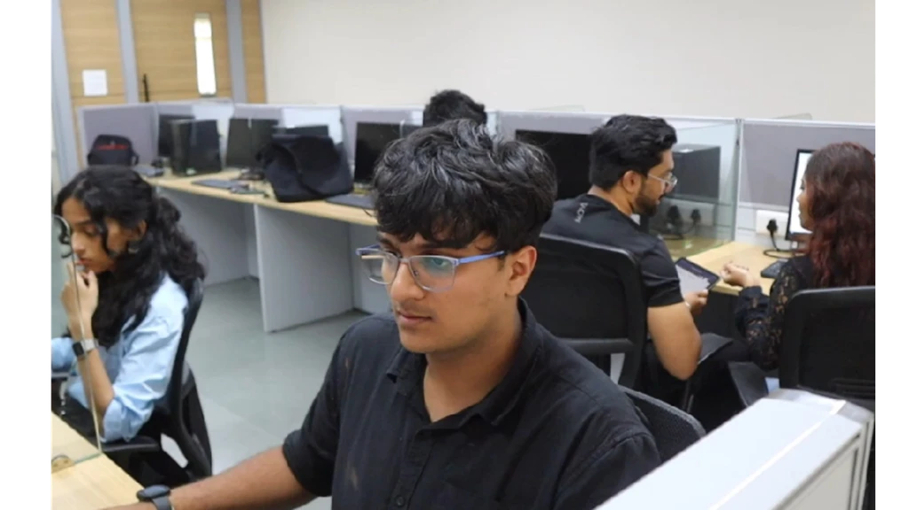

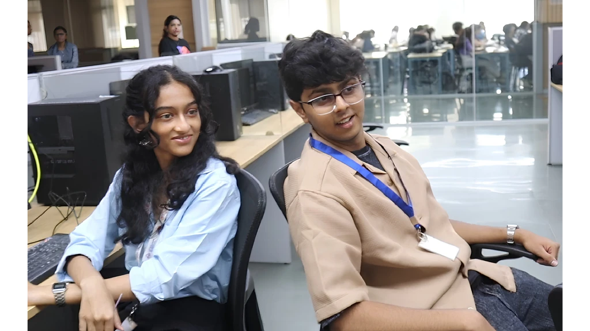
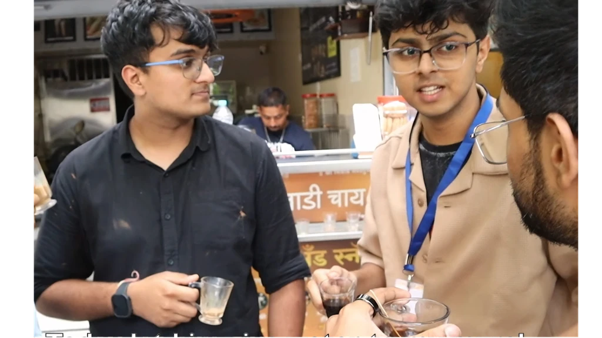
The daily grind
Screens, deadlines and long hours keep employees tied to their desks.
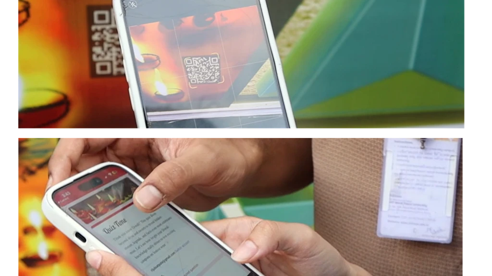
Scan. Play. Win.
A festive QR quiz turns participation into play, rewarding correct answers with Diwali coupons.
A chai break
“Wait, a mural with plants?”
Aayush: guys, chai break?”
Over chai, Aayush introduces the new mural initiative to Pranshu, a new employee, sparking his curiosity.
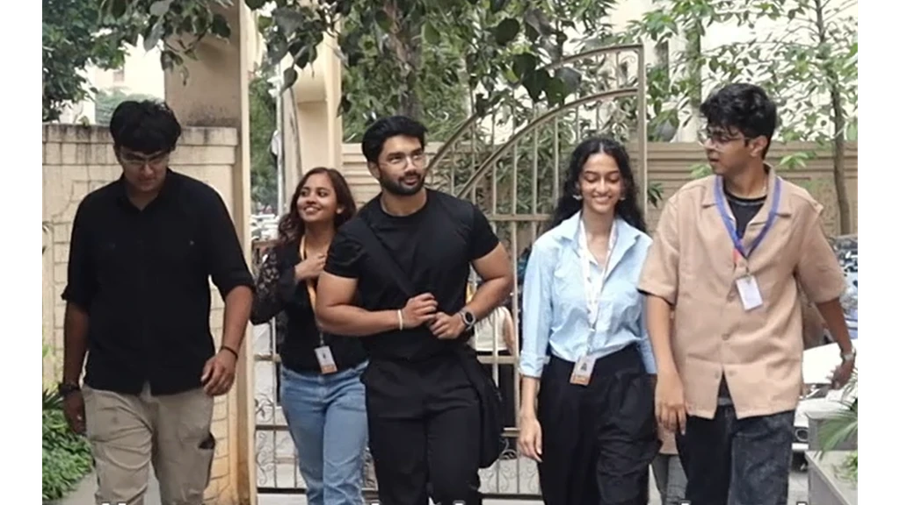
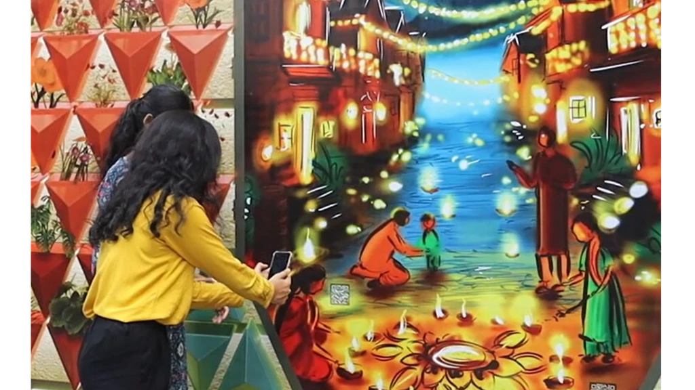
“Come on, let's check it out!”
More than just a mural
Intrigued by his colleagues' excitement, Pranshu joins them to explore the mural.
There it is — a vibrant Diwali mural, with colleagues already interacting, exploring and connecting.
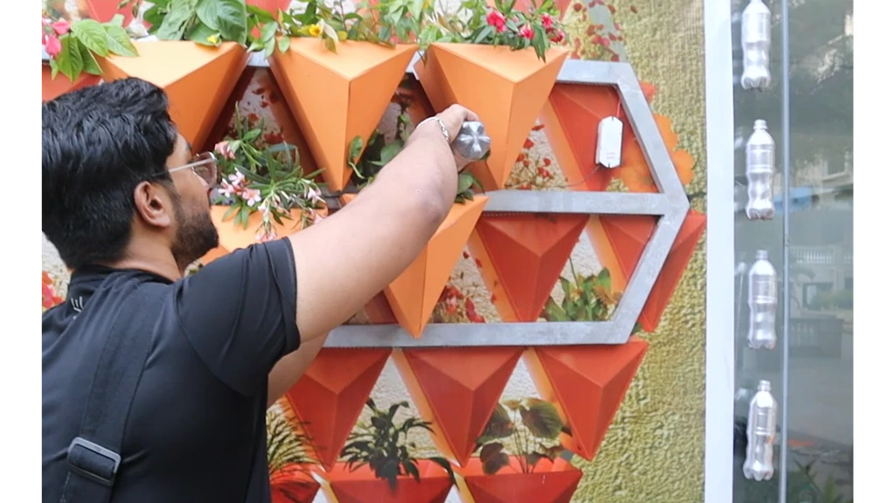
Every little action counts
Win or lose, the fun continues. Aayush grabs the watering bottle, and Pranshu joins in — turning a quick break into shared plant care.
Link to the entire roleplay video.
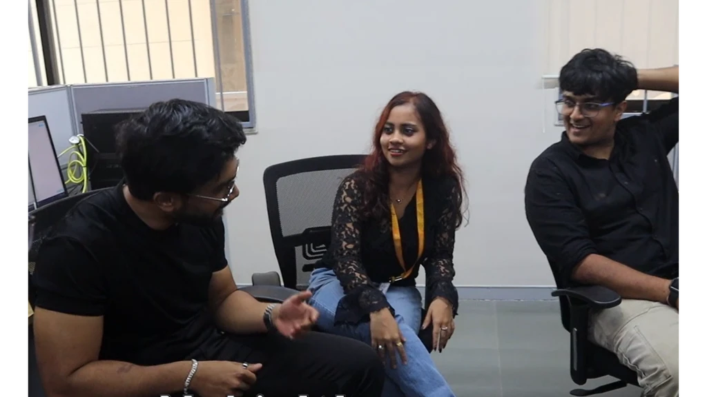
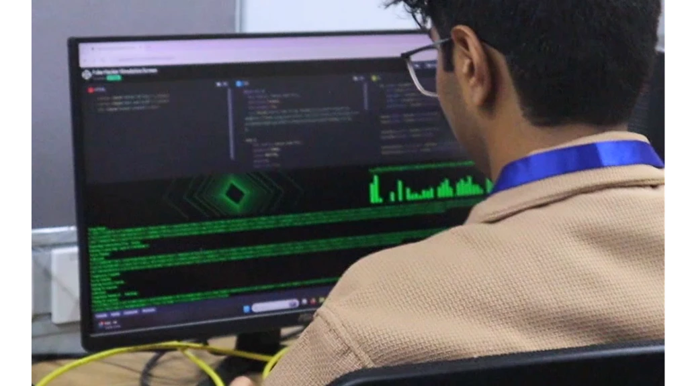
Wellness that grows with you
Breaking free from a sedentary routine
Nehi explains: nurture plants for a month, contribute to community planting and earn health insurance points — all while taking mindful breaks.
Inspired by the experience, Pranshu decides to bring his own plants and join the mural-painting event — taking a step towards a more active, connected life.
Mural at Night

Dynamic plant pods forms


Color Scheme
Warm terracotta tones create a natural base that stands out from a distance, while greenery adds contrast and vibrancy.
Designed to change with time, weather, and people.

Season-changing moss tiles in the top rows draw attention from afar, turning the most visible zone into a dynamic, living highlight.


Modular canvas tiles individually painted and assembled into a collective artwork - one continuous mural painted on a single large canvas.
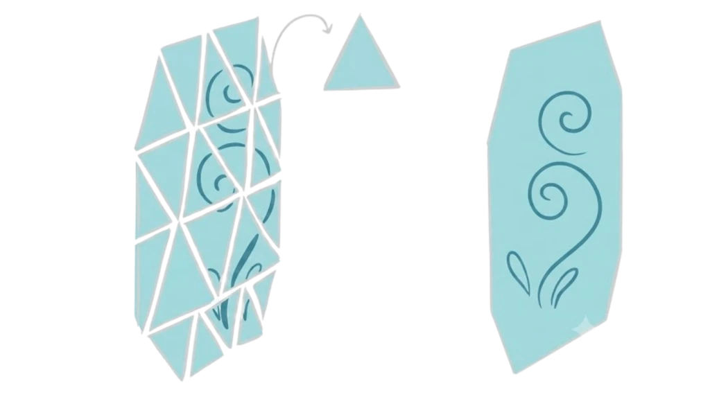
Plant Selection and Placemnet

Succulents / Moss (Top section of mural)
Low-maintenance plants requiring minimal watering.

Flowering Plants (Middle section of mural)
Easy to reach and water; the most interactive layer.

Foliage Plants (Bottom section of mural)
Extra space to grow wider and fuller.
Structure of the mural

Handle and lock to secure the mural as it is a public installation
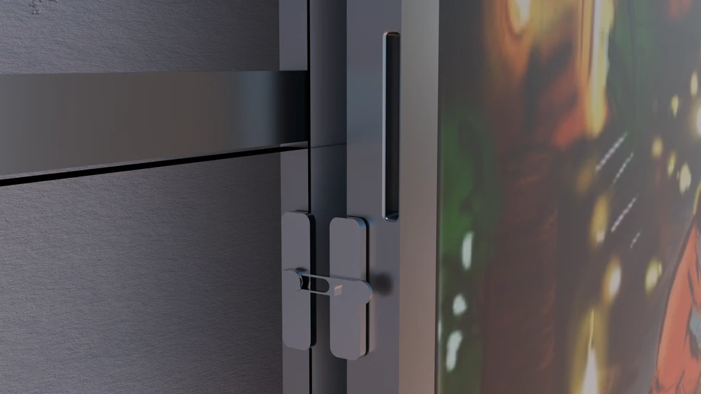
Pots with hooks for easy installation

Door that is unlocked when mural titles have to be changed
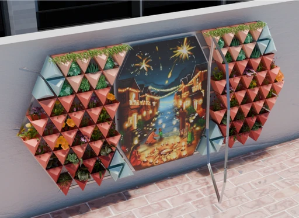
Hinges top open and close the door

Water Drainage System - The water that drips from the plants pass through the slits and fall into the grass below - recyclying

 See other works
See other works